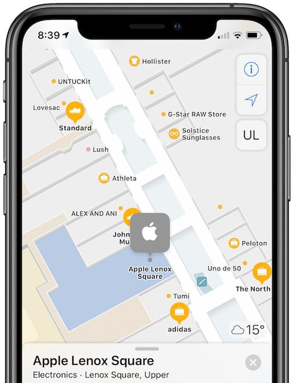

Selected Work

Experience
VP Engineering
- Lead 160+ engineers transforming Patreon into a creator-first social network.
- Grew creator payouts from $3.5B to $10B+ by pushing Patreon beyond subscriptions into new ways for creators to earn — shops, one-time purchases, gifting, and conversion tools.
- Building AI-native infrastructure for the team — agent-friendly dev environments, cross-repo tooling, and automated tests to ship safely at speed.
- Built mobile from scratch; shipped the new Patreon app and drove a 3× increase in DAU.
Senior Engineering Manager
- Built Threads, Close Friends, Stories Highlights, and the redesigned Instagram Profile. Led the 30+ engineer team behind Instagram's private communication surfaces.
Software Engineer → Engineering Manager
- One of two founding engineers on Instant Articles, building the rendering pipeline that powered the product — then grew readership 10× after transitioning to leading the team.
Software Engineer
- Paired with a research scientist to build the proof of concept for Apple's indoor positioning technology — fingerprinting, particle filtering, and surveying — later productionized as Apple Indoor Maps. Awarded 18 patents.
Education
BS Computer Science, Magna Cum Laude
Patents
-
A social networking system generates speech-to-text captions for videos and allows users to edit the wording, fonts, colors, and timing, as well as obscure offensive content, before sharing the modified video with others.
-
A design patent covering the ornamental appearance of a display screen graphical user interface.
-
A social networking system receives a user's detailed location and activity data, then generates a less-specific "status" derived from that data to share selectively with designated contacts.
-
A system pre-calculates content feed layouts in background threads before a user accesses individual items, reducing rendering delays and improving the speed of content presentation on device screens.
-
A system automatically learns users' movement patterns and lifestyle characteristics to create anonymous, ad hoc social groups based on shared location habits and behaviors—without requiring any explicit user request.
-
Instead of fixed GPS coordinates, this geofencing technique defines a virtual region as a group of signal sources sharing a common category identifier, allowing a mobile device to trigger an app whenever it enters any location belonging to that category (e.g., any branch of a retail chain).
-
When a mobile device crosses a virtual fence boundary while in power-saving mode, it logs the event silently and only surfaces the associated notification when the user next activates the device, avoiding disruptive alerts and conserving battery.
-
A system classifies the distance between a mobile device and an RF signal source into discrete range categories (Immediate, Near, Far, Unknown) by analyzing signal measurements against propagation-model thresholds, then feeds that classification into a state estimator to trigger location-based actions.
-
A proximity fence uses RF beacons with no geographic coordinates to define location zones purely by signal proximity, enabling mobile devices to trigger different application behaviors (e.g., store-section-specific promotions) as users move closer to or farther from individual beacons.
-
A mobile device first obtains a coarse location estimate upon entering a venue, then requests only the subset of location fingerprint data corresponding to that area from a server, enabling faster and more precise indoor positioning without downloading an entire venue's dataset.
-
A system generates indoor location fingerprint databases by having a surveyor collect signal measurements at multiple venue locations and orientations—accounting for body-induced signal attenuation—to produce per-location signal profiles used for positioning.
-
A location server delivers venue data in two tiers—first sending coarse venue-level data for all nearby locations, then providing detailed fingerprint data only for specific tiles when the device's context warrants it, saving bandwidth while enabling precise indoor positioning.
-
A mobile device uses a particle filter that combines real-time sensor readings with location fingerprint data and venue map constraints to iteratively refine its indoor position estimate down to room-level accuracy.
-
A system determines a mobile device's indoor location by statistically comparing live sensor readings (e.g., Wi-Fi signal strengths) against a fingerprint database of pre-mapped environmental measurements, achieving room-level accuracy where GPS is unavailable.
-
A location server builds a fingerprint database from surveyed signal measurements across multiple signal types (Wi-Fi, Bluetooth, magnetic, cellular), and mobile devices download and match against this data using a particle filter to achieve high-resolution indoor positioning.
-
A mobile device's state machine manages transitions between multiple location determination subsystems (e.g., GPS, Wi-Fi fingerprinting, cellular) based on sensor readings, switching methods as the device moves between outdoor and indoor environments.
-
A location server detects when signal sources (e.g., Wi-Fi access points) have moved by comparing device-reported signal locations against stored fingerprint data, and removes or deprioritizes displaced sources to prevent indoor positioning errors.
-
A device automatically infers user activity (such as sleeping) from on-board and wearable sensors, then adjusts alarms and notifications accordingly—for example, silencing audible alarms when the user is detected to be asleep.
-
A server applies machine learning to device attributes and crowd-sourced behavioral data to generate user profile classes, which are sent back to the device so applications can deliver personalized content tailored to individual user preferences.
-
An indoor positioning system uses elastic pathway matching within a particle filter so that candidate device locations near—but not exactly on—known venue pathways are probabilistically snapped toward those paths, reflecting realistic pedestrian movement while respecting physical constraints like walls.
-
A system divides venue maps into discrete downloadable tiles containing fingerprint and structural data, fetching only the tiles relevant to the device's current and predicted location so that indoor navigation remains accurate while minimizing memory use and download time.
-
To prevent particle filter depletion when estimating indoor device locations, this system splits propagation steps into sub-steps to route candidate locations around physical obstacles, and dynamically increases motion-model noise to recover when particles become trapped in dead ends.